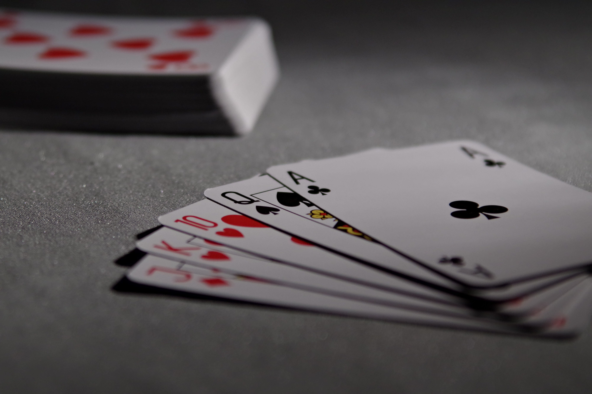
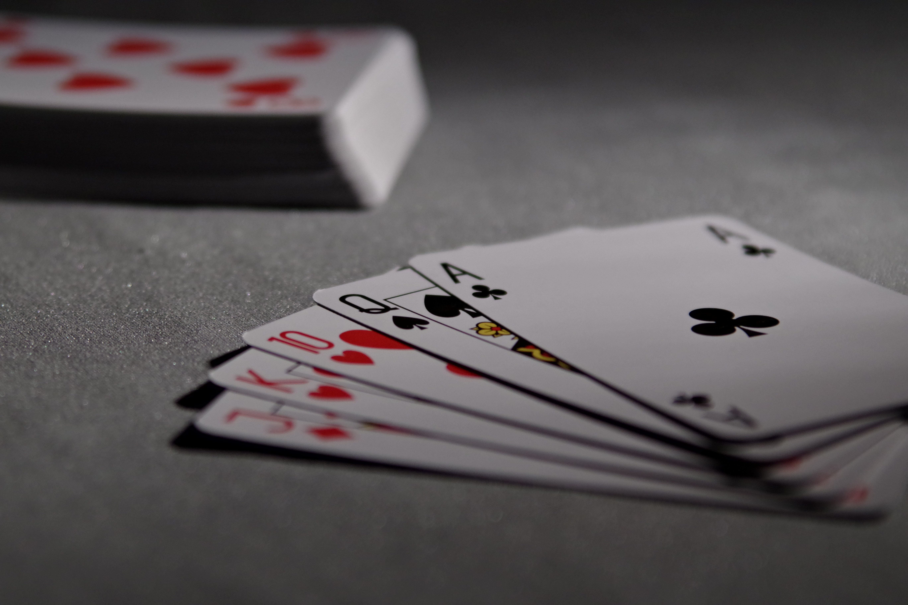

Piano: frequentei aula de teclado durante 1 ano n sou profissional, mas revelo que tenho uma certa facilidade com a área já que minha irmã mais velha já praticou o instrumento também.

Violino: comecei a tocar violino em 2020, e desde então persevero no mesmo. Confesso que é um instrumento muito difícil, porém amo cada avanço conquistado
Enquanto os outros aprendi por conta própria:


 
